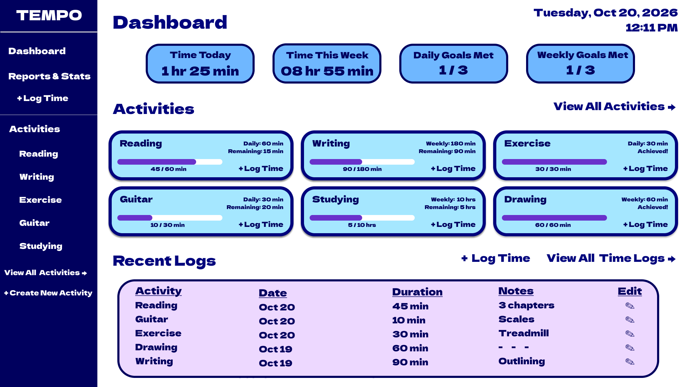
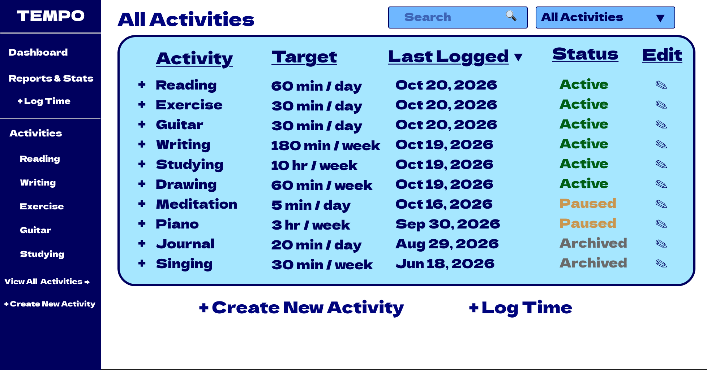
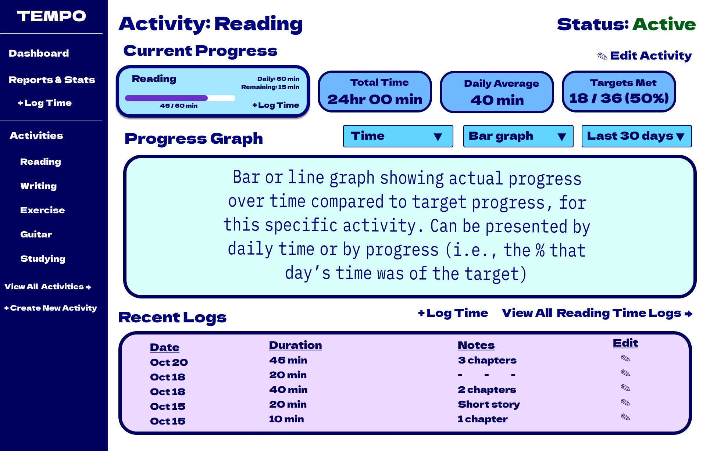
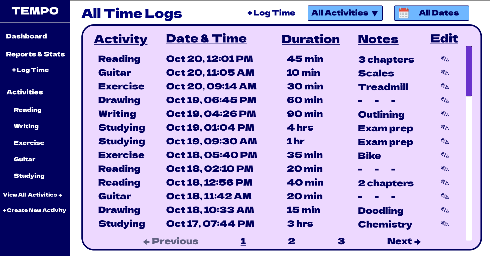
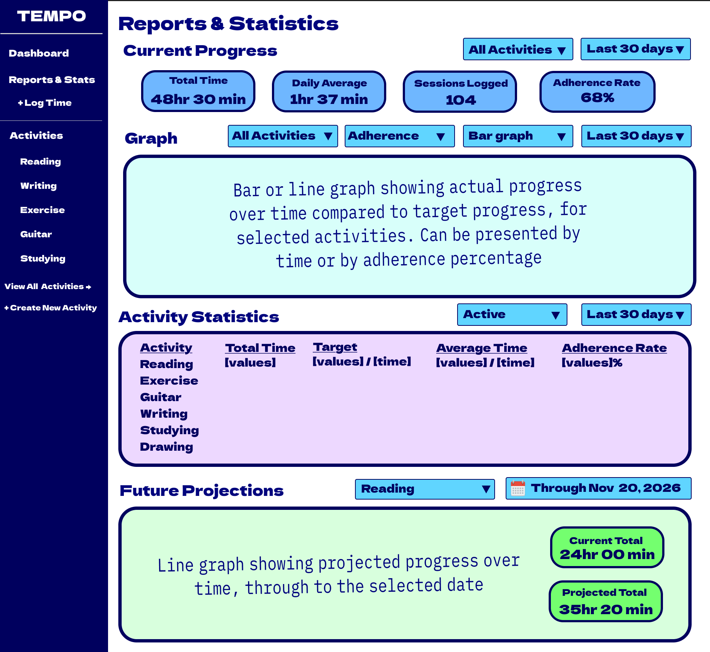

2.1 Primary Pages
TEMPO's primary pages include the Dashboard, All Activities, Individual Activity Details, All Time Logs, and Reports & Statistics. These pages allow users to monitor their progress, manage activities, review saved time records, and analyze historical performance.
2.1.1 Dashboard
The Dashboard serves as TEMPO's main landing page, providing an overview of the user's activities, current progress, and recent time records.
Related requirements: FR-02, FR-14, FR-18
Key Components
- Date and Time: Displays the current date and time in the upper-right corner.
- Progress Summary: Displays four statistics:
- Total time logged today.
- Total time logged during the current week.
- Number of daily goals achieved.
- Number of weekly goals achieved.
- Activity Cards: Display active activities and their current daily or weekly goals. Each card includes the activity name, target duration, progress bar, recorded time, remaining time, and a logging button. Suspended and archived activities remain accessible through the All Activities page, which displays their statuses and current goals.
- Recent Logs: Displays the most recent time records, including the activity, date, duration, notes, and an edit option.
User Interactions
- Click an activity to open its individual details page.
- Click + Log Time (present on the activity cards) to open the logging modal with the corresponding activity selected.
- Click View All Activities to access the complete activity list.
- Click + Log Time (above the Recent Logs section) to open the logging modal with no activity selected.
- Click View All Time Logs to access the complete time record history.
- Click a time record's notes field to view its details, displaying the activity, date, duration, and full notes.
- Click an edit icon to modify an existing time record.

2.1.2 All Activities
The All Activities page provides a complete list of the user's activities, including active, suspended, and archived activities. Users can browse and manage their activities from this page.
Related requirements: FR-02, FR-06, FR-07, FR-19
Key Components
- Search Bar: Allows users to search for activities by name.
- Status Filter: Allows users to display all activities or filter by active, suspended, or archived status.
- Activity Table: Displays the user's activities with the following information:
- Activity name.
- Current daily or weekly target.
- Date of the most recent time record.
- Activity status.
- Edit button.
- Sorting Controls: Allow users to organize activities by most recent time record.
- Create New Activity: Opens the activity creation form.
- + Log Time: Opens the time logging modal.
User Interactions
- Enter text in the search bar to find activities by name.
- Select a status to display active, suspended, archived, or all activities.
- Click a column's sorting control to change the order of the displayed activities.
- Click an activity name to open its individual details page.
- Click the + button beside the activity name to log time for that specific activity.
- Click an edit icon to open the activity editing modal.
- Click + Create New Activity to open the activity creation modal.
- Click + Log Time to open the time logging modal.

2.1.3 Individual Activity
The Individual Activity (or just Activity) page provides a detailed view of a selected activity, including its current goal, historical progress, statistics, and recent time records. Users can also manage the activity and its associated time records.
Related requirements: FR-05, FR-13, FR-14, FR-15, FR-16, FR-20
Key Components
- Activity Information: Displays the activity name and current status.
- Current Progress: Displays the current daily or weekly target, time logged, remaining time, and a progress bar.
- Statistics: Displays the total time logged, average daily time, and number and percentage of targets achieved.
- Progress Graph: Displays historical progress using a bar or line graph. Users can view recorded time or the percentage of the target achieved over a selected date range.
- Recent Logs: Displays the five most recent time records for the activity, including dates, durations, notes, and editing controls.
User Interactions
- Click Edit Activity to open the activity editing modal with this specific activity pre-selected.
- Click + Log Time to open the logging modal with the current activity automatically selected.
- Use the graph controls to switch between bar and line graphs, select a reporting period, and view time or target progress.
- Click View All Reading Time Logs to open the All Time Logs page filtered to the selected activity.
- Click a time record's notes field to view its details, displaying the activity, date, duration, and full notes.
- Click an edit icon beside a time record to open the Edit Log modal.

2.1.4 All Time Logs
The All Time Logs page displays the user's complete history of recorded time entries across all activities. Users can browse, filter, and manage their saved time records.
Related requirements: FR-10, FR-11, FR-12, FR-13
Key Components
- Activity Filter: Allows users to display time records for all activities or a specific activity.
- Date Filter: Allows users to select a date or date range to narrow the displayed records.
- Time Log Table: Displays saved time records with the following information:
- Activity name.
- Date and time of the recorded session.
- Duration of the session.
- Optional notes.
- Edit button.
- Pagination Controls: Allow users to navigate between pages of time records.
- Scroll Wheel: Allow users to scroll through currently selected page of time records.
- Log Time Button: Opens the time logging modal to create a new record.
User Interactions
- Select an activity from the dropdown to display only its associated time records.
- Use the date filter to display records from a selected date or date range.
- Scroll through the displayed time records and use the pagination controls to view additional entries.
- Click an activity name to open its individual details page.
- Click a time record's notes field to view its details, displaying the activity, date, duration, and full notes.
- Click an edit icon to open the Edit Log modal with the selected record's existing information.
- Click + Log Time to open the time logging modal and create a new record.

2.1.5 Reports & Statistics
The Reports & Statistics page provides an overview of the user's progress across activities, including time totals, averages, historical trends, and future projections. Users can filter reports by activity and date range to examine their progress in greater detail.
Related requirements: FR-14, FR-15, FR-16, FR-17, FR-18, FR-20, NFR-05
Key Components
- Current Progress: Displays four summary statistics for the selected activities and date range:
- Total time logged.
- Average daily time logged.
- Number of sessions logged.
- Goal adherence rate.
- Progress Graph: Displays historical progress using a bar or line graph. Users can compare recorded time against applicable goals or view adherence percentages over a selected date range.
- Activity Statistics: Displays a table comparing activities using the following information:
- Activity name.
- Total time logged.
- Current daily or weekly target.
- Average time logged.
- Goal adherence rate.
- Future Projections: Displays an estimated cumulative time total for a selected activity and future date. A line graph illustrates historical time records with a solid line and estimated future progress with a dashed line. Current and projected totals are displayed alongside the graph. The estimate is based on the activity's recent daily average, as defined by the analytics subsystem.
- Filtering Controls: Allow users to select activities, activity statuses, and date ranges for the different reporting sections.
User Interactions
- Select an activity or all activities and a date range to update the Current Progress statistics.
- Use the graph controls to select activities, switch between recorded time and adherence percentages, choose a bar or line graph, and adjust the date range.
- Filter the Activity Statistics table by activity status and reporting period.
- Select an activity and future date in the Future Projections section to display an estimated cumulative time total and projection graph.
- View historical progress using the goals that were applicable during each reporting period, even if those goals have since been revised.
- Reporting sections update independently based on their selected filters.
- If an activity has insufficient recorded history, the Future Projections section displays a message explaining that an estimate is not yet available.
